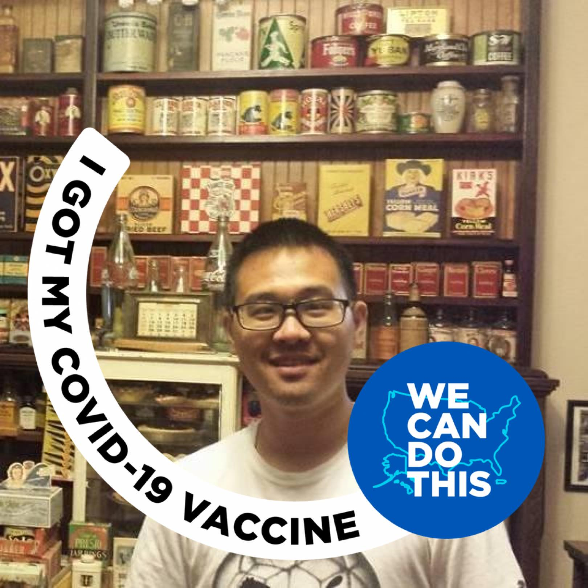

Technologies for this class
- HTML
- CSS
- JavaScript
 My name is Emery Cho. I was born and raised in San Francisco. I currently deliver for the post office. I've been taking various courses in web development and in computer networking on and off since 2016. I have previously attended a coding bootcamp for web development, but it's been a few years since doing a good amount of web development.
As mentioned above, one of my reasons to take this course is to review and get a refresher of what I've already learned in the coding bootcamp. Another reason to take this class is to see if web development is a good potential career for me. I also have a fascination about technology, so I would also like to get into something that I also enjoy, even though careers in general are far from easy. Because of this, I'm also taking other networking and IT courses in CCSF. I hope to learn more about web development and anything else that deals with computers and technology.